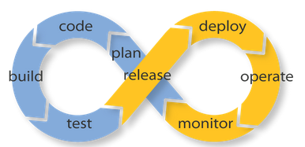

DevOps
Demo Java Application
This is the Home page of my Application to illustrate CI-CD process using following tools:
GIT as Source Control management
ANT as build tool
Jenkins as CI driver
Tomcat7 as web server to host the application